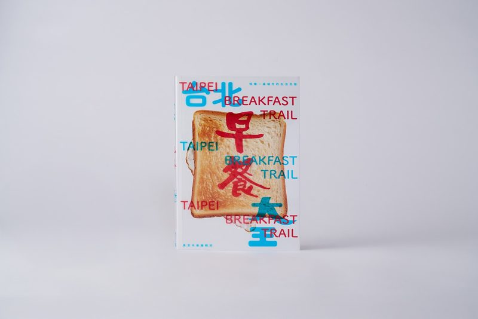
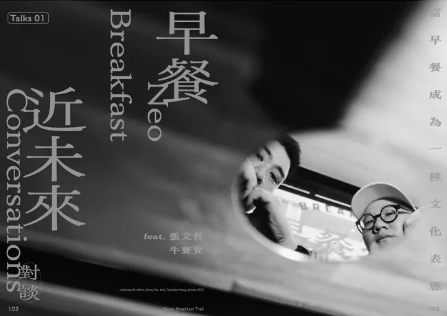
洪 采 姍
深耕媒體內容產業逾八年，專注於人物專訪、品牌敘事與文字編輯，擁抱設計藝文、人文觀察與商業觀點的獨特視野。


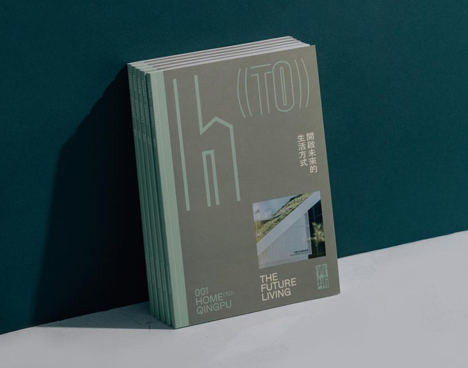
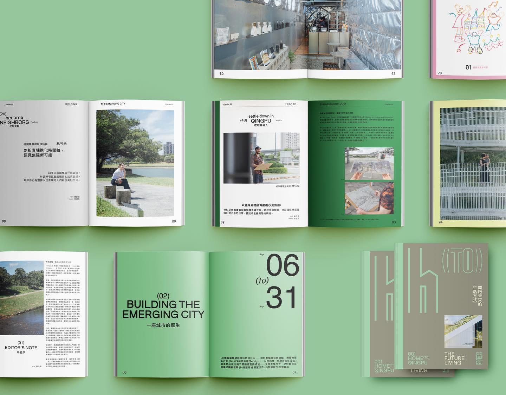
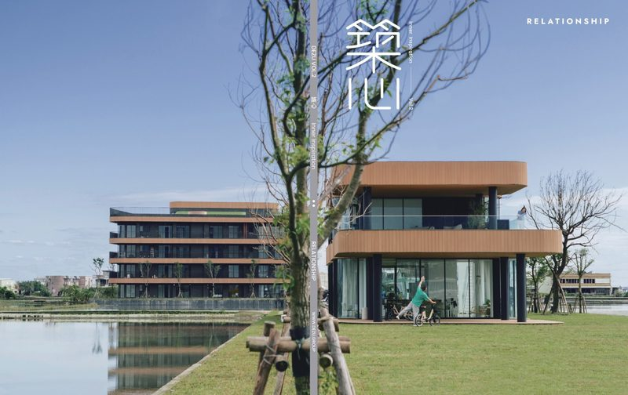
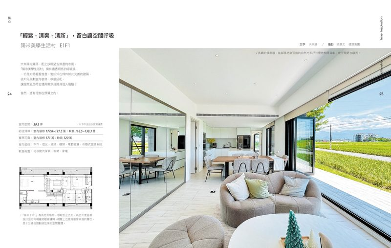
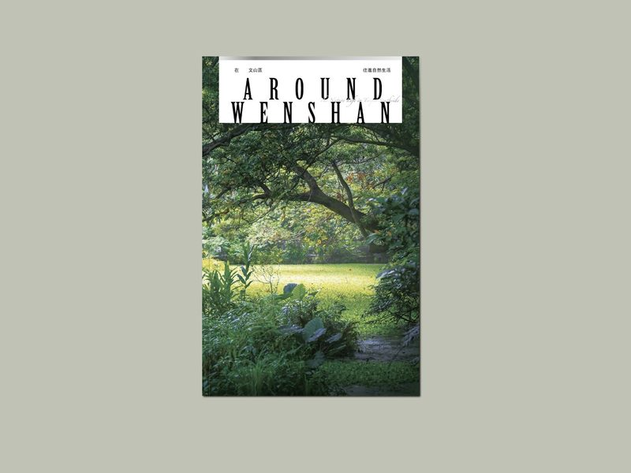
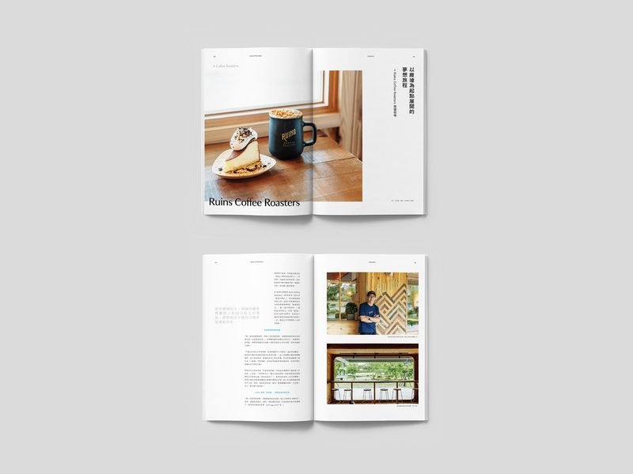
從事文字工作以來，所參與的每項專案、產出的每篇內容，對我來說，都是愛的映現。在與受訪者傾談交流、穿梭活動現場、感受品牌脈動的一路上，每次遇見都令我無比感謝。
作品集內容將不定期更新，歡迎偶爾來踏踏，每雙足跡都是珍貴的印記。
“Work is love made visible.”── Khalil Gibran
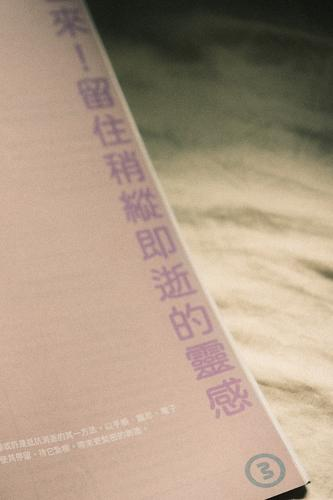
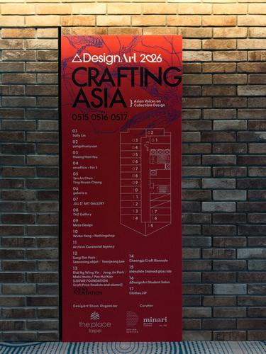
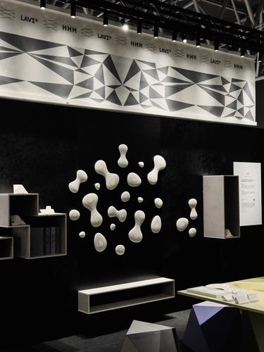
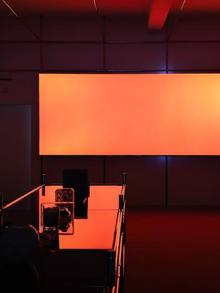
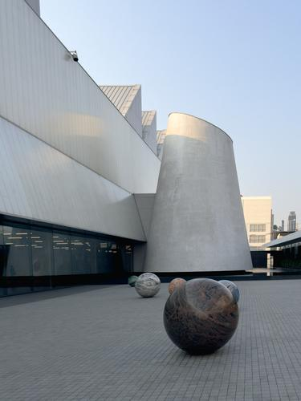
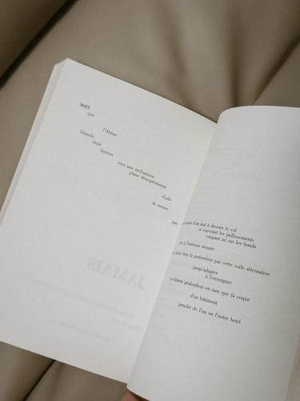
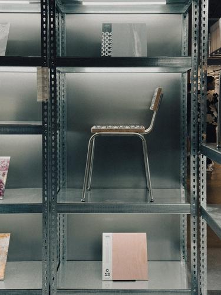
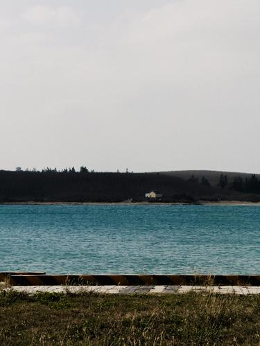
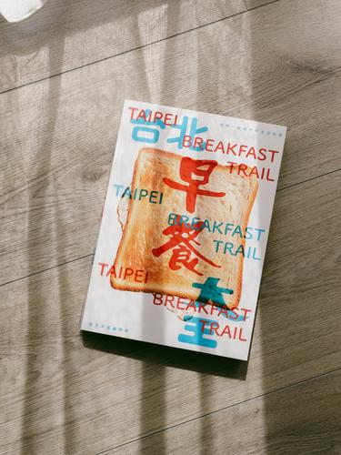
深度訪談規劃與執行，擅長挖掘個人生命敘事與品牌人物故事。
結合品牌精神與媒體調性產製內容，以細緻筆觸轉譯商業訴求，創造兼具深度與感染力的閱讀體驗。
擔任主編或執行編輯，操刀主題框架、稿件統籌與風格把關，涵蓋雜誌、品牌刊物與數位出版。
品牌故事、商品介紹等文案撰寫，建立品牌識別與情感連結。
品牌廣編、人物專訪、文字編輯統籌，或任何內容合作構想，都歡迎來信聊聊。